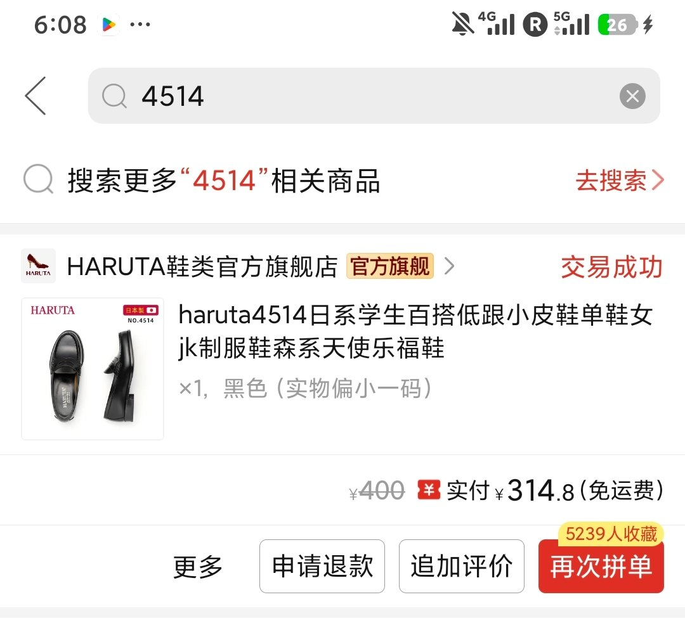
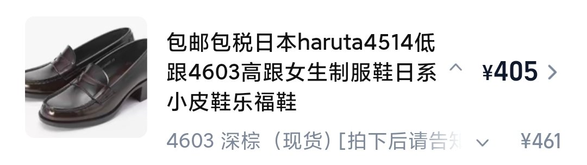
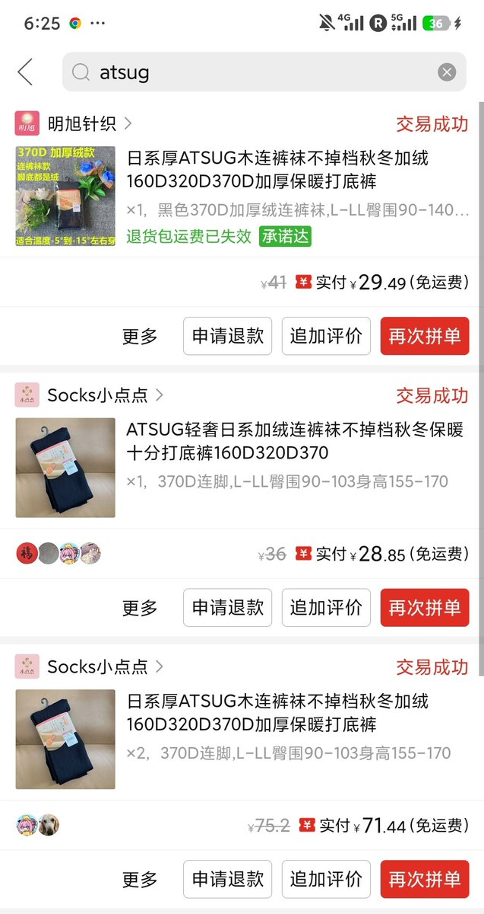
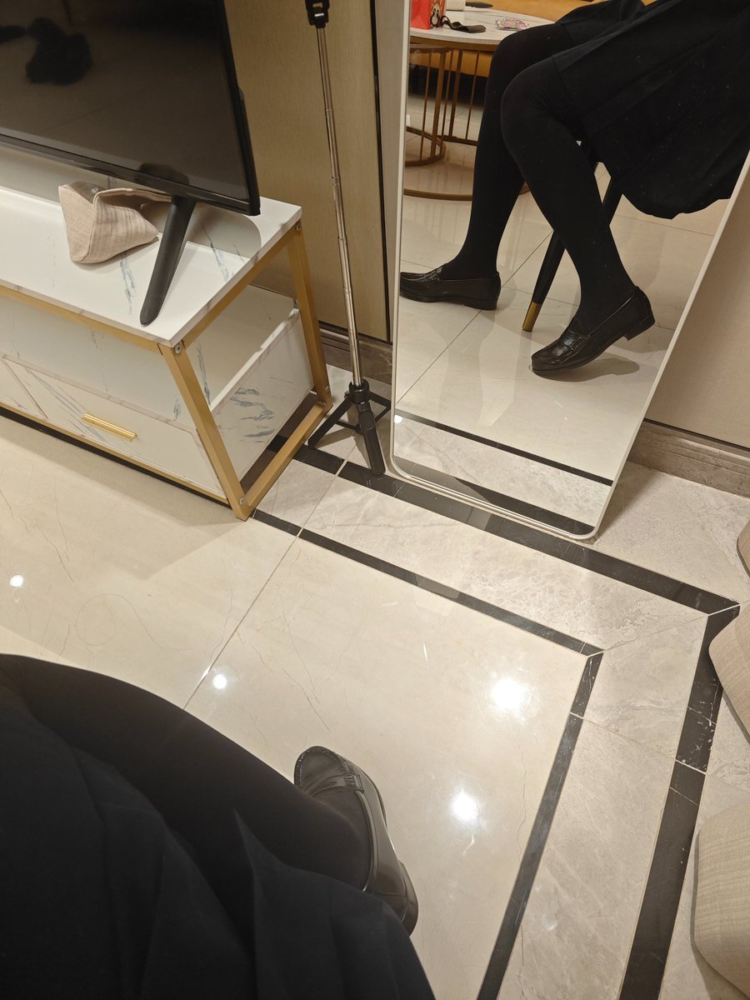

奶昔🥤
@realNyarime
u1s1至少制服鞋我都是买HARUTA的，居然还能被喷连一双正版皮鞋都舍不得买😂
当然国产也有很多版型抄H家的，比如原栗熊、森林喵，圆头还行尖头略有逊色
至于裤袜，厚木、抵达一楼、涞觅、绫这些也试过，质量跟pdd上3条20+的水光袜差不了多少
也就在家开空调穿着玩，外面那么热连门都不想出，就这样吧




奶昔🥤
@realNyarime
这裤子长度刚好，穿起来不拖地也不短，搭配小皮鞋很显腿长👞
黑色也耐脏，日常通勤完全没问题。质地挺顺滑的，坐着也没觉得紧绷。整体挺满意的，推荐～👍👍 https://t.co/QsoCIjtX9B